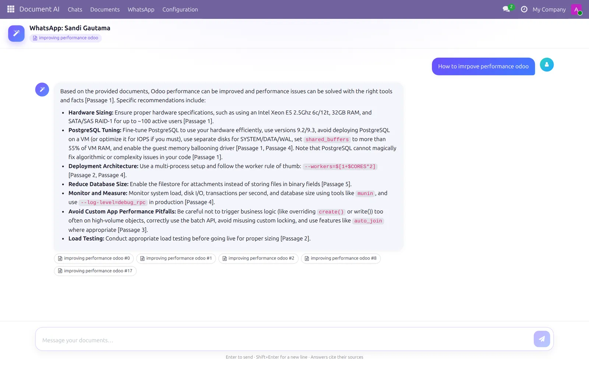
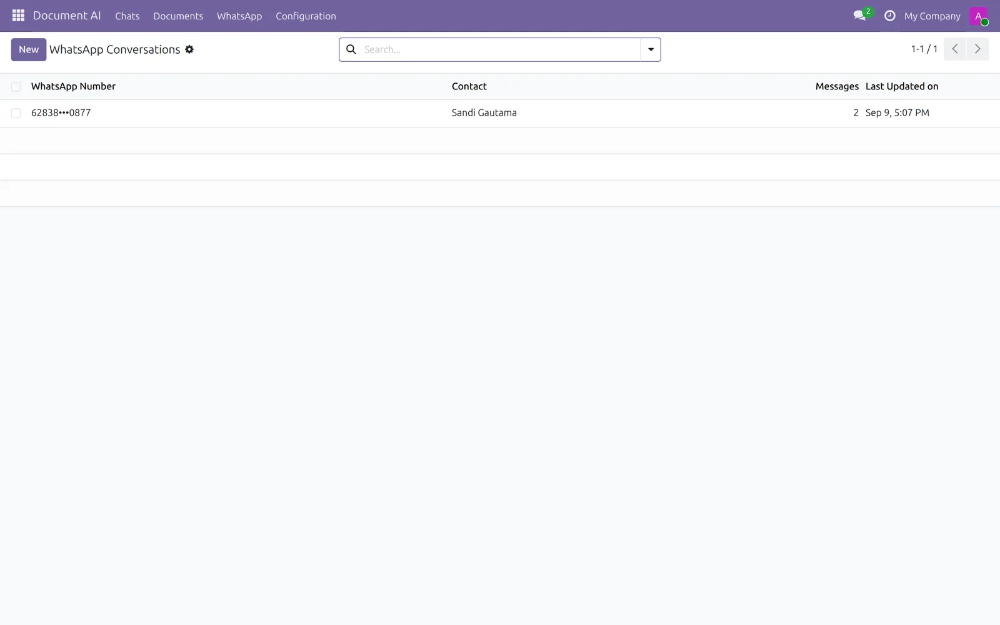
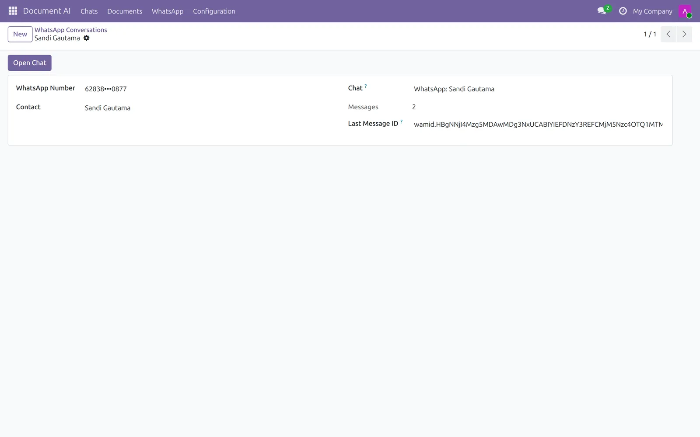
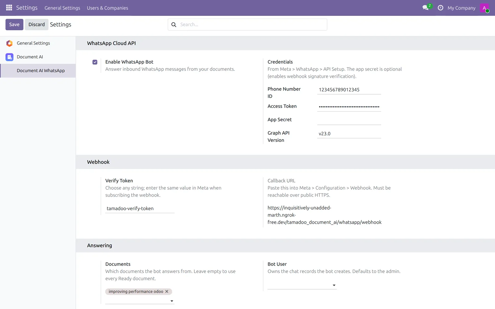

WhatsApp AI Chatbot - Answers from Your Documents
WhatsApp chatbot with AI that answers customer messages from your own documents, with sources. Connects Document AI to the WhatsApp Cloud API.
- Price
- $29
- Odoo versions
- 16.0
- 17.0
- 18.0
- 19.0
- 20.0
- Technical name
tamadoo_document_ai_whatsapp- License
- OPL-1

Text and screenshots below are from the Odoo 20.0 version of this module.
Your customers ask on WhatsApp — and get answers grounded in your own documents, with the exact source passages cited.
tamadoo_document_ai first.

Why teams love it
Answer where they already are
No app, no portal. Customers message your WhatsApp Business number and get an answer from your documents.
Grounded, not guessed
Replies come from the RAG pipeline and cite their sources. If it isn't in your docs, the bot says so.
No template approval
Plain-text replies inside WhatsApp's 24-hour service window — skip Meta's message-template review entirely.
One conversation per sender
Every WhatsApp number gets its own chat record in Odoo, with full history you can read and audit.
How it works
Message
A customer texts your WhatsApp Business number.
Webhook
Meta forwards it to the module's public, verified webhook.
Answer
Document AI retrieves passages and writes a grounded reply.
Reply
The answer is sent back through the WhatsApp Cloud API.
A closer look
One conversation per sender
Every WhatsApp number becomes a conversation record with its message count and the linked Document AI chat.


Everything on one settings page
Cloud API credentials, the webhook callback URL + verify token, and which documents the bot answers from.

Set up
- Install Tamadoo Document AI and let a document reach Ready.
- Install this module.
- In Meta for Developers, add the WhatsApp product; note your Phone Number ID and a permanent access token.
- Settings → Document AI WhatsApp → enable the bot, paste the credentials, pick a Verify Token, choose the source documents.
- In Meta → WhatsApp → Configuration → Webhook, paste the Callback URL + the same Verify Token, and subscribe to messages.
- Message your WhatsApp Business number — the bot replies from your documents.
Requirements: Odoo 20.0, the tamadoo_document_ai module, a WhatsApp
Business (Cloud API) number, and an Odoo server reachable over public HTTPS.
Get WhatsApp AI Chatbot
Questions before buying? Write to tama.odoo@gmail.com.